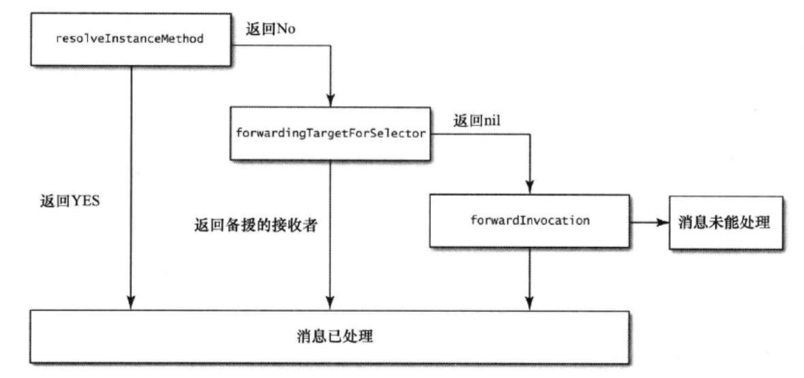

这里主要结合源码来理解：
1)runtime消息传递
2)runtime消息转发
参考链接：
iOS runtime探究(二): 从runtime开始深入理解OC消息转发机制
深入理解Objective-C：Category
在OC中的实例对象调用一个方法称作消息传递，比如有如下代码:
#import "Dog.h"
@implementation Dog
- (void)run {
NSLog(@"=====%@=====", NSStringFromSelector(_cmd));
}
@end
Dog *husky = [[Dog alloc] init];
[husky run];上述代码中的第二句husky称为消息的接受者，run:称作选择子也就是我们常用的selector，selector和参数共同构成了消息。
OC中里的消息传递采用动态绑定机制来决定具体调用哪个方法，OC的实例方法在转写为C语言后实际就是一个函数，但是OC并不是在编译期决定调用哪个函数，而是在运行期决定，因为编译期根本不能确定最终会调用哪个函数，这是由于运行期可以修改方法的实现。举个栗子，有如下代码:
id num = @123;
//输出123
NSLog(@"%@", num);
//程序崩溃,报错[__NSCFNumber appendString:]: unrecognized selector sent to instance 0x7b27[num appendString:@"Hello World"];上述代码在编译期没有任何问题，因为id类型可以指向任何类型的实例对象，NSString有一个方法appendString:，在编译期不确定这个num到底具体指代什么类型的实例对象，并且在运行期还可以给NSNumber类型添加新的方法，因此编译期发现有appendString:的函数声明就不会报错，但在运行时找不到在NSNumber类中找不到appendString:方法，就会报错。这也就是消息传递的强大之处和弊端，编译期无法检查到未定义的方法，运行期可以添加新的方法。
一个对象的方法像这样[dog run]，编译器转成消息发送objc_msgSend(dog, run)，Runtime时执行的流程是这样的：
使用clang -rewrite-objc Dog.m这个命令用于clang重写.m文件为.cpp文件。
关键代码如下：
#ifndef _REWRITER_typedef_Dog
#define _REWRITER_typedef_Dog
typedef struct objc_object Dog;
typedef struct {} _objc_exc_Dog;
#endif
struct Dog_IMPL {
struct NSObject_IMPL NSObject_IVARS;
};
struct objc_object {
Class _Nonnull isa __attribute__((deprecated));
};typedef struct objc_object Dog;将Dog定义为objc_object的结构体。而struct objc_object结构体只有一个类型为Class的isa指针变量
通过obj_object中的isa指针找到它的class
objc/runtime.h中Class用结构体objc_class内容如下：
struct objc_class {
Class _Nonnull isa OBJC_ISA_AVAILABILITY;
#if !__OBJC2__
Class _Nullable super_class OBJC2_UNAVAILABLE;
const char * _Nonnull name OBJC2_UNAVAILABLE;
long version OBJC2_UNAVAILABLE;
long info OBJC2_UNAVAILABLE;
long instance_size OBJC2_UNAVAILABLE;
struct objc_ivar_list * _Nullable ivars OBJC2_UNAVAILABLE;
struct objc_method_list * _Nullable * _Nullable methodLists OBJC2_UNAVAILABLE;
struct objc_cache * _Nonnull cache OBJC2_UNAVAILABLE;
struct objc_protocol_list * _Nullable protocols OBJC2_UNAVAILABLE;
#endif
} OBJC2_UNAVAILABLE;
1)、指向元类的指针（isa）
2)、指向父类的指针（super_class）
3)、类名（name）
4)、版本（version）
5)、类信息，供运行期使用的一些位标识（info）
6)、实例变量大小（instance_size）
7)、实例变量（ivars）
8)、方法列表（methodLists）
9)、缓存（cache）
10)、协议列表（protocols）
但这种实现有个问题，效率低。但一个class往往只有 20%的函数会被经常调用，可能占总调用次数的 80%。每个消息都需要遍历一次objc_method_list并不合理。如果把经常被调用的函数缓存下来，那可以大大提高函数查询的效率。这也就是objc_class中另一个重要成员objc_cache做的事情 - 再找到run之后，把run的method_name作为key，method_imp作为value给存起来。当再次收到run消息的时候，可以直接在cache里找到，避免去遍历objc_method_list。从前面的源代码可以看到objc_cache是存在objc_class结构体中的。
看下IMP的定义：(IMP是一个函数指针，指向实现这个函数的方法。然后这些方法都被放到objc_method_list这个结构体里)
typedef id _Nullable (*IMP)(id _Nonnull, SEL _Nonnull, ...); 在iOS的Runtime中，Method通过selector和IMP两个属性，实现了快速查询方法及实现，相对提高了性能，又保持了灵活性。
有代码如下：
@interface Dog : NSObject
- (void)run;
@end
@implementation Dog
- (void)run {
NSLog(@"=====%@=====", NSStringFromSelector(_cmd));
}
@end
@implementation DogOwner
- (instancetype)init {
self = [super init];
if (self) {
//为了方便查看转写后的C语言代码，将alloc和init分两步完成
Dog *husky = [Dog alloc];
husky = [husky init];
[husky run];
}
return self;
}
@end通过上述clang命令可以转写代码，然后找到如下定义:
static void _I_Dog_run(Dog * self, SEL _cmd) {
NSLog((NSString *)&__NSConstantStringImpl__var_folders_p5_y3clzk754jz80jwsc26h9zx40000gq_T_Dog_943a24_mi_0, NSStringFromSelector(_cmd));
}
static instancetype _I_DogOwner_init(DogOwner * self, SEL _cmd) {
self = ((DogOwner *(*)(__rw_objc_super *, SEL))(void *)objc_msgSendSuper)((__rw_objc_super){(id)self, (id)class_getSuperclass(objc_getClass("DogOwner"))}, sel_registerName("init"));
if (self) {
Dog *husky = ((Dog *(*)(id, SEL))(void *)objc_msgSend)((id)objc_getClass("Dog"), sel_registerName("alloc"));
husky = ((Dog *(*)(id, SEL))(void *)objc_msgSend)((id)husky, sel_registerName("init"));
((void (*)(id, SEL))(void *)objc_msgSend)((id)husky, sel_registerName("run"));
}
return self;
}可以发现转写后的C语言代码将实例方法转写为了一个静态函数。接下来一行一行的分析上述代码，第一行代码可以简要表示为如下代码:
Dog *husky = objc_msgSend(objc_getClass(“Dog"), sel_registerName("alloc"));这一行代码做了三件事情，第一获取Dog类，第二注册alloc方法，第三发送消息，将消息alloc发送给类对象，可以简单的将注册方法理解为，通过方法名获取到转写后C语言函数的函数指针。
第二行代码就可以简写为如下代码:
husky = objc_msgSend(husky, sel_registerName("init"));这一行代码与上一行类似，注册了init方法，然后通过objc_msgSend函数将消息init发送给消息的接受者husky。
最后一行代码也可以简写为如下：
objc_msgSend(husky, sel_registerName("run"));我们知道，所有的OC类和对象，在runtime层都是用struct表示的，category也不例外，在runtime层，category用结构体category_t（在objc-runtime-new.h中可以找到此定义），它包含了
1)、类的名字（name）
2)、类（cls）
3)、category中所有给类添加的实例方法的列表（instanceMethods）
4)、category中所有添加的类方法的列表（classMethods）
5)、category实现的所有协议的列表（protocols）
6)、category中添加的所有属性（instanceProperties）
struct category_t {
const char *name;
classref_t cls;
struct method_list_t *instanceMethods;
struct method_list_t *classMethods;
struct protocol_list_t *protocols;
struct property_list_t *instanceProperties;
} category_t;从category的定义也可以看出category的可为（可以添加实例方法，类方法，甚至可以实现协议，添加属性）和不可为（无法添加实例变量）。
1)、category的方法没有“完全替换掉”原来类已经有的方法，也就是说如果category和原来类都有methodA，那么category附加完成之后，类的方法列表里会有两个methodA
2)、category的方法被放到了新方法列表的前面，而原来类的方法被放到了新方法列表的后面，这也就是我们平常所说的category的方法会“覆盖”掉原来类的同名方法，这是因为运行时在查找方法的时候是顺着方法列表的顺序查找的，它只要一找到对应名字的方法，就会罢休^_^，殊不知后面可能还有一样名字的方法。
举个栗子如下：
@implementation Dog
- (void)run {
NSLog(@"=====%@=====", NSStringFromSelector(_cmd));
}
@end
@implementation Dog (Category1)
- (void)run {
NSLog(@"=====Dog (Category1)");
}
@end
@implementation Dog (Category2)
- (void)run {
NSLog(@"=====Dog (Category2)");
}
@end控制台输出为：
2018-08-28 20:50:28.915336+0800 AssociatedObjects[56678:10951420] =====Dog (Category2)而category的-run执行顺序是根据编译顺序决定的。
目前的编译顺序是这样的：
我们调整一个Category1和Category2的编译顺序，run。ok，我们可以看到控制台的输出顺序变了：
2018-08-28 20:59:36.011553+0800 AssociatedObjects[56864:10971281] =====Dog (Category1)对于这个问题，我们已经知道category其实并不是完全替换掉原来类的同名方法，只是category在方法列表的前面而已，所以我们只要顺着方法列表找到最后一个对应名字的方法，就可以调用原来类的方法：
Class currentClass = [Dog class];
Dog *husky = [[Dog alloc] init];
if (currentClass) {
unsigned int methodCount;
Method *methodList = class_copyMethodList(currentClass, &methodCount);
IMP lastImp = NULL;
SEL lastSel = NULL;
for (NSInteger i = 0; i < methodCount; i++) {
Method method = methodList[i];
NSString *methodName = [NSString stringWithCString:sel_getName(method_getName(method))
encoding:NSUTF8StringEncoding];
if ([@"run" isEqualToString:methodName]) {
lastImp = method_getImplementation(method);
lastSel = method_getName(method);
}
}
typedef void (*fn)(id,SEL);
if (lastImp != NULL) {
fn f = (fn)lastImp;
f(husky,lastSel);
}
free(methodList);
}控制台输出为：
2018-08-29 09:30:02.126652+0800 AssociatedObjects[57961:11069814] =====run=====首先，如果沿继承树没有搜索到相关方法则会向接收者所属的类进行一次请求，看是否能够动态的添加一个方法，注意这是一个类方法，因为是向接收者所属的类进行请求。
+(BOOL)resolveInstanceMethod:(SEL)name举个栗子吧:
@implementation Dog
+ (BOOL)resolveInstanceMethod:(SEL)name {
NSLog(@"resolveInstanceMethod: %@", NSStringFromSelector(name));
if (name == @selector(appendString:)) {
class_addMethod([self class], name, (IMP)dynamicAdditionMethodIMP, "v@:");
return YES;
}
return [super resolveInstanceMethod:name];
}
+ (BOOL)resolveClassMethod:(SEL)name {
NSLog(@"resolveClassMethod %@", NSStringFromSelector(name));
return [super resolveClassMethod:name];
}
void dynamicAdditionMethodIMP(id self, SEL _cmd) {
NSLog(@"dynamicAdditionMethodIMP");
}
@end
int main(int argc, char * argv[]) {
@autoreleasepool {
id husky = [[Dog alloc] init];
[husky appendString:@"fly"];
return UIApplicationMain(argc, argv, nil, NSStringFromClass([AppDelegate class]));
}
}先看一下最后的输出结果吧：
2018-08-27 20:54:12.736374+0800 AssociatedObjects[24983:9943374] resolveInstanceMethod: appendString:
2018-08-27 20:54:12.737683+0800 AssociatedObjects[24983:9943374] dynamicAdditionMethodIMP由于Dog类没有声明和定义appendString:方法，所以运行时应该会报unrecognized selector错误，但是并没有，因为我们重写了类方法+ (BOOL)resolveInstanceMethod:(SEL)name，当找不到相关实例方法的时候就会调用该类方法去询问是否可以动态添加，如果返回True就会再次执行相关方法。
当对象所属类不能动态添加方法后，runtime就会询问当前的接受者是否有其他对象可以处理这个未知的selector，相关方法声明如下:
- (id)forwardingTargetForSelector:(SEL)aSelector;该方法的参数就是那个未知的selector，这是一个实例方法，因为是询问该实例对象是否有其他实例对象可以接收这个未知的selector，如果没有就返回nil。
当没有备援接收者时，就只剩下最后一次机会，那就是消息重定向。这个时候系统就会向实例对象发出methodSignatureForSelector消息，检测它这个消息是否有效？有效就会继续发出forwardInvocation消息，无效则返回nil。如果是nil就会crash。
举个栗子吧:
@interface Dog ()
@property (nonatomic, copy) NSMutableString *name;
@end
@implementation Dog
- (void)forwardInvocation:(NSInvocation *)invocation {
[invocation invokeWithTarget:self.name];
NSLog(@"forwardInvocation %@", self.name);
}
- (NSMethodSignature *)methodSignatureForSelector:(SEL)aSelector {
NSLog(@"methodSignatureForSelector %@", NSStringFromSelector(aSelector));
NSMethodSignature *sig = [self.name methodSignatureForSelector:aSelector];
return sig;
}
#pragma mark - Getters
- (NSMutableString *)name {
if (!_name) {
_name = [[NSMutableString alloc] init];
}
return _name;
}
@end
int main(int argc, char * argv[]) {
@autoreleasepool {
id husky = [[Dog alloc] init];
[husky appendString:@"fly"];
return UIApplicationMain(argc, argv, nil, NSStringFromClass([AppDelegate class]));
}
}控制台输出如下：
2018-08-28 14:53:36.962662+0800 AssociatedObjects[36285:10432310] methodSignatureForSelector appendString:
2018-08-28 14:53:57.094125+0800 AssociatedObjects[36285:10432310] forwardInvocation fly重定向消息可以模拟多继承。一个对象已经继承一个父类了，还行执行其他类的方法，怎么办，我们可以考虑用重定向。
消息处理流程如下图：
